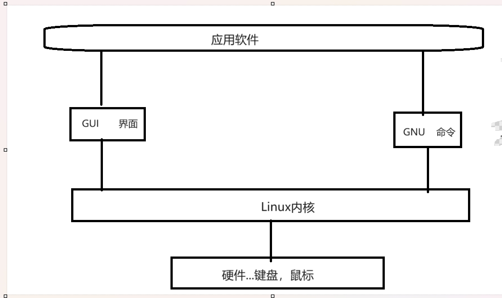

Linux
Linux 应该叫GNU/Linux
首先明白Linux入门不是学“Linux” 而是
1.体验：比较和其他系统的不同点和相同点
2.Linux GUI - > Shell
GUI可理解为桌面程序
Linux 是一个操作系统 其分为四个部分
1.Linux kernel(内核)
2.GNU工具
3.GUI Desktop环境
4.Application应用
GNU/Linux

Linux内核
1.硬件设备管理使用
2.软件程序（系统）------->操作软件
3.系统内存
4.文件管理（保存文件，删除文件，修改文件......）
文件系统
读，写的标准
不同文件系统有不同的读写标准
Windows常用文件系统类型：NTFS
Linux常用文件系统类型：ext,ext2,ext3,ext4(最常用),hpfs,iso9660,JFS,minix,msdos,ncpfs,nfs,ntfs,proc,Reiserfs,smb,sysv,umsdos,vfat(通常是引导使用),XFS,xiafs
(去企业面试可能会被问)
GNU组织
Unix上具有的一些软件，Linux内核本身没有，所以GNU他们模仿Unix,为Linux写了一些必要的软件
- GNU核心：
原本在Unix上的一些命令和工具，被模仿（移植）到了Linux上。
供Linux使用的这套工具：coreutils
coreutilities软件包：
1.用来处理文本的工具
2.用来操作文本的工具
3.用来管理进程的工具
- shell
shell提供给用户使用的软件：用户拿它来使用电脑，并且和电脑交互。
命令行壳层提供一个命令行界面（CLI）;而图形壳层提供一个图形用户界面（GUI）。
即Shell分为两大类：
1.图形界面Shell (GUI Shell)
2.命令行界面Shell (GLI Shell)
linux shell--->CLI Command-Line-Interface
GLI shell
bash shell 基础shell
zsh(包含ash,korn,tcsh)
MacOS（苹果系统）----->Unix专业人选择
Linux GUI发展历史
1.X Windows
2.KDE(windows,MacOS使用系统)
3.GNOME
4.Unity
shell
输入一条命令后按回车
$ 表示当前要输入命令了
入门命令：
ls 显示当前目录所有文件夹（不包括隐藏文件夹）
ls -a 显示带点的隐藏文件
终端
zrq @ q ：~ $ 的含义
用户名@机器名 当前所在目录 等待用户输入
-
@ 前是用户名
-
@ 后是机器命（计算机名）
-
~ 代表用户home目录
-
$ 表示等待用户输入
ls 系列命令
ls命令 就是list的缩写，用来显示目标列表，在Linux中是使用率较高的命令。ls命令的输出信息可以进行彩色加亮显示，以分区不同类型的文件
最常用的命令
$ ls # 仅列出当前目录可见文件
$ ls -l # 列出当前目录可见文件详细信息
$ ls -hl # 列出详细信息并以可读大小显示文件大小
$ ls -al # 列出所有文件（包括隐藏）的详细信息
$ ls --human-readable --size -1 -S --classify # 按文件大小排序
$ du -sh * | sort -h # 按文件大小排序(同上)
如何了解更多ls命令：
1.使用 man 了解更多（对英语要求比较高）
2.进入官方网站查询(非常靠谱)
http://wangchujiang.com/linux-command/
补充两个清屏办法：
1.Ctrl+L
2.输入clear命令
Linux一切皆文件
/ 根目录
/home 主目录，显示所有用户目录
/bin 二进制目录 GNU工具 ls等自带的命令
存放许多用户级
/cdrom 光盘
/etc 系提供配置文件目录
/lib 库目录
/lost+found 找回因突发事件而丢失的文件
/mnt 挂载目录
挂载-----外在的设备和电脑进行连接 U盘
/proc 伪文件系统
/tmp 临时目录
/var 可变目录 log
/boot 启动目录
/dev 设备目录
/media 媒体目录（mp3,mp4之类的。和mnt挂载目录很像，但是有区别）
/opt 可选目录
/root root用户的主目录 管理员
/sbin 系统二进制目录，GNU高级管理员使用的命令工具
/srv 服务目录 本地服务
/usr 用户二进制目录，GNU工具
FHS
文件系统层级标准
cd 系列命令
切换用户当前工作目录。
.表示当前目录
..表示当前目录的上一级目录(父级目录)
pwd输出当前在哪个目录（输出绝对路径）
cd # 进入用户主目录；
cd / # 进入根目录
cd ~ # 进入用户主目录；
cd .. # 返回上级目录（若当前目录为“/“，则执行完后还在“/"；".."为上级目录的意思）；
cd ../.. # 返回上两级目录；
在Linux 终端的特殊命令
-
ctrl+c 表示强制退出错误命令
-
ctrl+shift+c 表示复制
-
ctrl+shift+v 表示粘贴
-
在Linux 终端中不支持剪贴
绝对路径和相对路径
1.绝对路径
D:\Linux\2K版\000.Linux初步认识\系统的认识.ev4
盘符:\文件夹\ ...\文件名.文件后缀
特点：全，精确
2.相对路径
一定要有故事背景前提，即你在哪？
举个例子便于理解
假如朋友的地址在地球亚洲中国北京市海淀区双清路30号
而你要去朋友那里，朋友会告诉你他的地址，那么首先你要确定自己的位置
1.假如你在北京市
你的朋友会告诉你他的地址：海淀区双清路30号
2.假如你在上海市
你的朋友会告诉你他的地址：北京市海淀区双清路30号
3.假如你在菲律宾
你的朋友会告诉你他的地址：中国北京市海淀区双清路30号
4.假如你在美国
你的朋友会告诉你他的地址：亚洲中国北京市海淀区双清路30号
我所理解的就是层级关系不同，相对路径不同。
假如我要进入到 D:\Linux\2K版\000.Linux初步认识\系统的认识.ev4（绝对路径）
我现在在 D:\Linux\2K版 这个位置
那么我的相对路径为\000.Linux初步认识\系统的认识.ev4
touch 命令
touch命令 有两个功能：一是用于把已存在文件的时间标签更新为系统当前的时间（默认方式），它们的数据将原封不动地保留下来；二是用来创建新的空文件。
touch ex2
在当前目录下建立一个空文件ex2
touch file{1..5}.txt
批量创建文件
cp 命令
建议新手强制加上-i
cp用法：cp 源文件 目标文件（cp 你想复制的文件 你想复制到哪）
- 源文件：制定源文件列表。
- 目标文件：指定目标文件。
默认情况下，cp命令不能复制目录，如果要复制目录，则必须使用-R选项
-i：覆盖既有文件之前先询问用户；
-R/r：递归处理，将指定目录下的所有文件与子目录一并处理
如果把一个文件复制到一个目标文件中，而目标文件已经存在，那么，该目标文件的内容将被破坏。(覆盖性)
此命令中所有参数既可以是绝对路径名，也可以是相对路径名。通常会用到点.或点点..的形式。
所有目标文件指定的目录必须是己经存在的，cp命令不能创建目录。如果没有文件复制的权限，则系统会显示出错信息。
cp 既可以复制文件，也可以复制文件夹
终端光标移动技巧
- Tab键 偷懒神键 自动补全
- ctrl+左右键 跳动命令上的光标
- ctrl+左键 跳动光标到上一个命令单词词首
- ctrl+右键 跳动光标到下一个命令单词词首 ctrl+A 跳动光标到命令开头
- ctrl+E 跳动光标到命令结尾
- ctrl+H 删除光标所在字母
- ctrl+U 删除光标前的所有命令（通常用作删除一整行命令）
- ctrl+K 删除光标后的所有命令
链接文件
链接文件分为两种：符号链接（软连接）和硬链接 （面试的时候可能会被问）
- Windows 快捷方式（.lnk） .lnk 链接文件
- Linux里边 链接文件 1.符号链接（软链接）——类似于Windows里边的快捷方式 2.硬链接 类似于Windows里边创建副本
运用要求：原来的文件或文件夹必须是存在的
ln -s创建软连接
ln 创建硬链接（硬链接只能在一个介质里边，有多个硬盘时 不太好使）
如果用cp命令复制一个软链接会怎么样?
复制的不是一个文件，而是一个快捷方式（类似于发快捷方式给别人）
mv 命令
用来对文件或目录重新命名
重命名文件
mv file_1.txt file_2.txt # 将文件file_1.txt改名为file_2.txt
将文件从一个目录移到另一个目录中
如果将一个文件移到一个已经存在的目标文件中，则目标文件的内容将被覆盖。
注意事项：mv与cp的结果不同，mv好像文件“搬家”，文件个数并未增加。而cp对文件进行复制，文件个数增加了。
移动文件
mv file_1.txt /home/office/
!$
- 执行上一条命令最后一个路径
rm 命令
用于删除给定的文件和目录
注意：使用rm命令要格外小心。因为一旦删除了一个文件，就无法再恢复它。所以，在删除文件之前，最好再看一下文件的内容，确定是否真要删除。
建议加上-i，-i：删除已有文件或目录之前先询问用户
-d：直接把欲删除的目录的硬连接数据删除成0，删除该目录；
-f：强制删除文件或目录；
-i：删除已有文件或目录之前先询问用户；
-r或-R：递归处理，将指定目录下的所有文件与子目录一并处理；
- rm -rf /* 危险！ #删除根目录下所有文件
- sudo rm -rf /* 非常危险！ #以管理员身份删除根目录下所有文件（蹲大牢）
2023.12.3 故障
不小心把文件remove（永久删除）了怎么办？
下面以我的博客文件为例，来告诉大家该如何修复
首先在之前放置博客文件的文件夹下面新建一个博客文件夹，然后进去，进去之后打开终端执行两条命令（以我的为例）
git clone [git@github.com:](mailto:git@github.com:)zrqiq/zrqiq.git
git clone [git@github.com:](mailto:git@github.com:)zrqiq/zrq-blog.git
这样两个文件夹就都下载回来了（zrqiq和zrq-blog）
但是还得配置一下
在zrq-blog文件夹下：
- git remote add blog [git@github.com:](mailto:git@github.com:)zrqiq/zrq-blog.git
- git config --global user.email "这里写你的邮箱"
- git config --global user.name "这里写你github的用户名"
在zrqiq文件夹下：
- cp ../zrqiq-blog/auto-update-this-repo.sh ./
- git remote add zrqiq [git@github.com:](mailto:git@github.com:)zrqiq/zrqiq.git
- git config --global user.email "这里写你的邮箱"
- git config --global user.name "这里写你github的用户名"
- 最后打开文件夹内的auto-update-this-repo.sh文件，将最后一行的blog改为zrqiq
然后就ok了！感谢我学长！！！（大家别轻易尝试，对心脏不好）
mkdir 命令
make directories
mkdir命令 用来创建目录。
-p或--parents 若所要建立目录的上层目录目前尚未建立，则会一并建立上层目录；
查询文件命令
- file
用来探测给定文件的类型
- cat
显示文件内容
- more
显示文件内容，每次显示一屏
该命令一次显示一屏文本，满屏后停下来，并且在屏幕的底部出现一个提示信息，给出至今己显示的该文件的百分比：--More--（XX%）可以用下列不同的方法对提示做出回答
按 Space 键：显示文本的下一屏内容。
按 Enter 键：只显示文本的下一行内容。
按斜线符|：接着输入一个模式，可以在文本中寻找下一个相匹配的模式。
按H键：显示帮助屏，该屏上有相关的帮助信息。
按B键：显示上一屏内容。
按Q键：退出more命令。
- less
分屏上下翻页浏览文件内容
ess命令 的作用与more十分相似，都可以用来浏览文字档案的内容，不同的是less命令允许用户向前或向后浏览文件，而more命令只能向前浏览。用less命令显示文件时，用PageUp键向上翻页，用PageDown键向下翻页。要退出less程序，应按Q键。
/字符串：向下搜索"字符串"的功能
?字符串：向上搜索"字符串"的功能
n：继续向后搜索
N：向前搜索
b: 向后翻一页
d: 向后翻半页
u: 向前滚动半页
y: 向前滚动一行
Q: 退出less 命令
空格键: 滚动一页
回车键: 滚动一行
[pagedown]： 向下翻动一页
[pageup]： 向上翻动一页
G: 移动到最后一行
g: 移动到第一行
- tail
在屏幕上显示指定文件的末尾若干行
tail -n number #显示结尾后number行
- head
显示文件的开头部分，在未指定行数时默认显示前10行。
head -n number #显示开头前number行
先不按顺序补一点点笔记吧
环境变量
环境变量作用可以理解为预约 在任何地方都可以访问环境变量中的内容
环境变量分为两种 用户变量和系统变量
Linux当中一个叫全局变量一个叫局部变量
查看全局变量用printenv (env是环境变量的意思)
echo输出
想使用环境变量时，在其前面加上$
局部变量只能在一个shell里边用，局部变量可以使用set查看
在编程的时候，局部变量使用广泛
用户定义的变量，大多数都是局部变量
定义局部变量
- 变量名=“” 定义的局部变量，千万不能使用大写，全局变量的名是大写的，若有好几个单词就用下划线隔开
定义用户全局变量
- 用小写，只有系统变量才使用大写 export 变量名=“ ”
如何删除变量
使用unset 变量名
追加命令 PATH=$PATH：路径
用户的含义和作用
用户ID------>UID
使用“cat /etc/passwd”命令可查看所有用户（注意cat 后必须有一个空格）
zrq:x:1000:1000:zrq,,,:/home/zrq:/bin/zsh
"zrq"是用户名
"x"是密码
第一个"1000"是用户ID
第二个"1000"是组ID
······
UID小于500的都是系统账户（系统账户UID<500）
使用“sudo cat /etc/shadow”命令可以查看用户密码，但是是加密的
任务管理器
在Linux中主要有三个命令可以查看进程：ps可以静态查看系统正在运行的进程，top则是动态查看进程和服务器的健康状况，而pstree命令主要用于查看进程树。
在Linux中，可以使用命令行工具来管理进程和杀死进程。常用的命令有：
1.ps命令：用于查看当前运行的进程。可以使用ps命令的不同选项来显示不同的信息，例如ps aux可以显示所有进程的详细信息。
2.top命令；用于动态地查看系统的进程和资源使用情况。top命令会实时更新进程的CPU使用率、内存使用率等信息。
3.kill命令：用于终止指定的进程。可以使用kill命令的不同选项来向进程发送不同的信号，例如kill-9可以强制终止进程。
4.pkill命令：用于根据进程名杀死进程。可以使用pkill命令的不同选项来指定匹配的进程名。
5.killall命令：用于根据进程名杀死进程。与pkill不同的是kilall命令会杀死所有匹配的进程。
相关问题
挂载
linux操作系统将所有的设备都看作文件，它将整个计算机的资源都整合成一个大的文件目录。我们要访问存储设备中的文件，必须将文件所在的分区挂载到一个已存在的目录上，然后通过访问这个目录来访问存储设备。挂载就是把设备放在一个目录下，让系统知道怎么管理这个设备里的文件，了解这个存储设备的可读写特性之类的过程